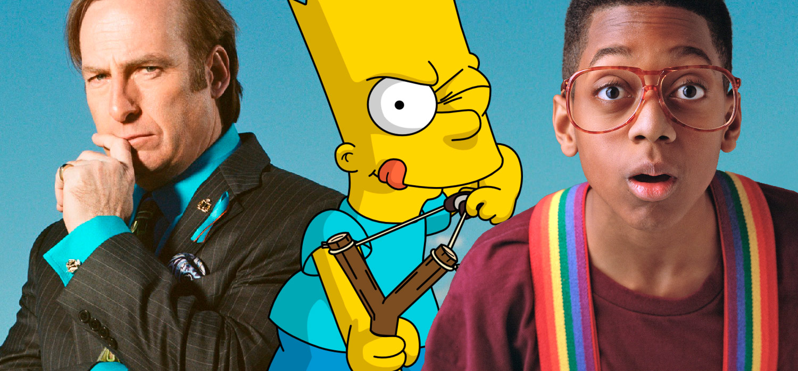
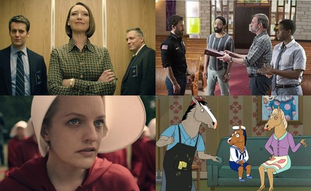

Series Televisivas
Inicio
Una serie de televisión es una obra audiovisual que se difunde en emisiones televisuales, manteniendo cada una de ellas una unidad argumental en sí misma y con continuidad, al menos temática, entre los diferentes episodios que la integran. Las series televisivas pueden emitirse por temporadas o conjuntos de capítulos que pueden presentar o no una temática propia y paralela al argumento general de la serie. Aunque el término se emplea popularmente para designar a la ficción seriada, otros géneros son susceptibles de ofrecerse en serie, como el documental. No debe ser confundida con la película.

Por norma general, las series de ficción son producciones mucho más costosas que los seriales. Ello se debe a que suelen plantearse para cubrir los horarios de mayor consumo televisivo o prime time, mientras que los últimos se destinan a las bandas diurnas o daytime, donde los niveles de audiencia son menores.
Debido a su considerable coste, se programan una vez a la semana (ocasionalmente, dos o tres) y casi nunca en tira diaria (en inglés, strip), que es como suelen emitirse los seriales.
Una serie suele concebirse de forma cerrada, con final previsto, pero dejando abierta la posibilidad de ampliar la producción, en función de los resultados de audiencia. Lo más habitual es que se realice una primera tanda de trece episodios y, si el éxito acompaña, es muy probable que la serie regrese con nuevas entregas.
El género del documental puede ser objeto de una emisión seriada en televisión, así como sus distintas variantes, surgidas a partir de un proceso de incorporación de técnicas características de otros géneros. Es el caso de los información contenida endocudramas, en los que se aborda la realidad con recursos narrativos propios de las series de ficción, como la guionización a partir de tramas e, incluso, personajes. Un ejemplo de docudrama seriado es la producción española Vivir cada día, emitida por TVE1 entre 1978 y 1988.
